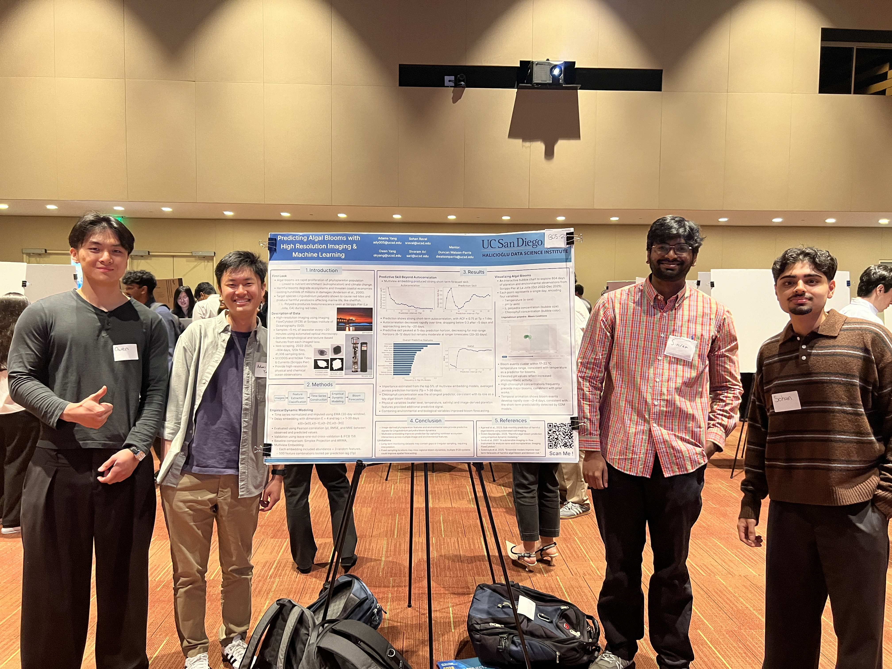

About
This website describes a HDSI Capstone Project at the University of California, San Diego. Summarizing the motivation, methods, and results of the study as well as an interactive visualization of the data. The project presented at the DSC Capstone Showcase on March 13, 2026.
This site was built using plain HTML, CSS, and JavaScript. The design is loosely inspired by Jekyll Minima theme and minimalist web design approaches like the best motherfucking website.
Data Sources
- IFCB plankton imaging data from Scripps Pier (IFCB 183)
- Additional imaging data from Del Mar Mooring (IFCB 158)
- Environmental sensor observations from the SCCOOS Data Portal
- Tide and water level measurements from NOAA Tides & Currents
Acknowledgements
We thank the people at Scripps Institution of Oceanography and at Southern California Coastal Ocean Observing System (SCCOOS) for helping us kickstart this project and providing access to the data. We also thank our mentor for their guidance and support throughout the course.
References
- Agarwal, V. et al. (2023). Sub-monthly prediction of harmful algal blooms using automated cell imaging. Harmful Algae.
- Sugihara, G. & May, R. (1990). Nonlinear forecasting as a way of distinguishing chaos from measurement error in time series. Nature.
- Ye, H. & Sugihara, G. (2016). Information leverage in interconnected ecosystems: Overcoming the curse of dimensionality. Science.

Contributions
- Sohan: Methods, results, website styling, and redesign
- Adams: Data collection, processing, modeling, and poster
- Owen: Data visualization, website styling, motivation, results, conclusion, discussion
- Sivaram: Extensive background research, modeling